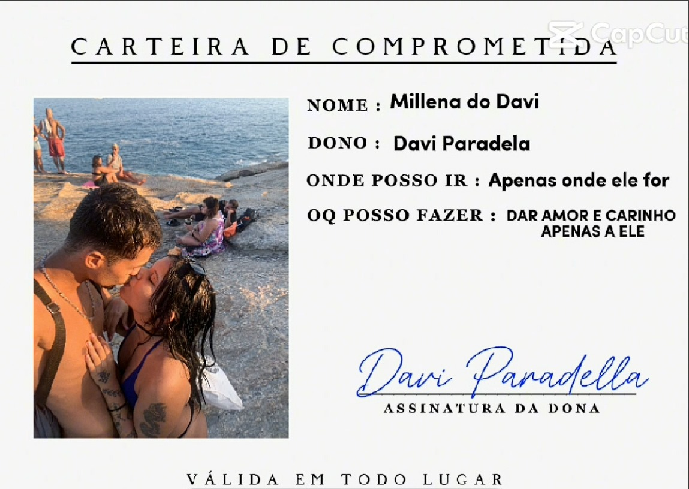

S√≥ queria agradecer por cada momento feliz, por cada riso, cada choro, ue, por cada choro? sim, pq mesmo sendo um momento bom ou ruim, oque me importa √© ter voc√™ do lado, com voc√™ do meu lado eu sinto que posso superar qualquer obstaculo, atingir qualquer meta, alca√ßar qualquer sonho, me perdoe pelas vezes que eu sumi e não te dei aten√ß√£o, estou correndo atrás de um futuro pra n√≥s dois, pq que não me contento com pouco, eu quero muito pra gente, então eu s√≥ preciso de ti do meu lado que sei que vou conseguir...Eu te amo muito! Nunca duvide dos meu sentimentos por voc√™, üíñ
